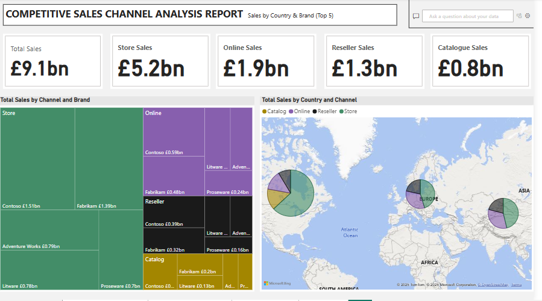
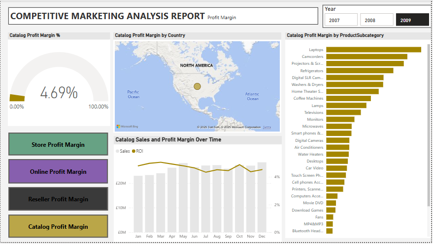

The store channel remains the top contributor but has declined significantly YoY.
Online and reseller channels are growing, suggesting a shift in customer purchasing behavior.
Catalog sales are declining, indicating the need for digital alternatives or reassessment.
Total Sales by Channel
Store: £2.23bn (56.4%)
Online: £0.94bn (22.7%)
Reseller: £0.6bn (14.6%)
Catalog: £0.35bn (8.4%)
📌 Insight: Physical stores still lead, but online and reseller channels make up over 37%—these should be prioritized for investment.
Total Sales by Product and Channel
Top-selling combinations:
Camcorders – Store
Projectors & Screens – Store
Refrigerators – Store
Laptops – Store
Digital SLR Cameras – Store
📌 Insight:
Products from store channel occupied majority of the top performing products followed by products from online channels, while Reseller and Catalog channels generated most products with worst performance.
Align marketing and inventory strategies based on product–channel fit.
Total Sales by Channel Over Time
Catalog sales were consistent in early months but faded later in the year.
Online sales began increasing sharply mid-year (June onward).
Reseller sales remained relatively flat throughout.
Store sales increased steadily from June to December, peaking in Q4.
📌 Insight:
Store still drives strong Q4 seasonal performance (likely holiday-driven).
Online is gaining momentum mid-to-late year—suggests opportunity for digital campaigns during summer and fall.
Strategic Takeaways for Stakeholders
Address the Decline in Store Sales
Investigate causes (e.g., competition, pricing, service issues).
Consider omnichannel strategies to retain foot traffic.
Invest in Growing Channels (Online & Reseller)
Scale digital presence; optimize delivery and user experience.
Build reseller partnerships or loyalty programs.
Phase Out or Reimagine Catalog Channel
Consider digital catalogs or targeted mailers for high-value customers.
Match Products with Their Best Channels
Example: Focus camcorder and projector promotions on catalog and online channels.
Capitalize on Seasonal Trends
Plan promotions and inventory spikes for store sales in Q4.
Launch mid-year campaigns to accelerate online sales momentum.
DASHBOARD 2
COMPETITIVE SALES CHANNEL ANALYSIS REPORT (Sales by Country & Brand – Top 5)

Focus: Regional sales distribution and brand/channel contribution.
KPI Cards (Top Section)
Total Sales (Multiyear/All Channels): £9.1bn
Store: £5.2bn
Online: £1.9bn
Reseller: £1.3bn
Catalog: £0.8bn
Key Insights: Store sales dominate (57%+), followed by online and reseller. Catalog trails—consider digital transformation or optimization.

Focus: Profit Margin (%) | Time Period: 2007–2009
🔑 Key Insights & Visual Interpretation
Overall Store Profit Margin: 33.94% — Healthy average margin across the period.
Store Profit Margin by Country
Geographic visualisation highlights margins across North America, Europe, Asia, parts of Africa and Australia. Darker/larger dots indicate higher margins (notably Western Europe, North America, and parts of Asia).
Insight: Identify outperforming regions to guide pricing and marketing strategy.
Store Profit Margin by Product Subcategory
Top-performing subcategories (by margin %):
Camcorders (7.70%)
Projectors & Screens (6.54%)
Digital SLR Cameras (5.06%)
Refrigerators, Washers & Dryers (3.2%–3.6%)
Lower-performing subcategories:
Boxed Games (0.11%)
VCD & DVD (0.13%)
MP4/MP3, Home Office, Computer Accessories (≤0.3%)
📌 Insight: Promote high-margin categories (e.g., camcorders, projectors); review pricing or inventory for low-margin items.
Sales & Profit Margin Over Time
Sales by Month (Bar): Seasonal pattern peaking around March, May, and October.
ROI/Profit Margin (Line): Fluctuates but remains broadly stable.
📌 Insight: Plan stock and marketing for high-sales months; align campaigns with margin trends to avoid high sales with low profitability.
Strategic Takeaways for Stakeholders
Double down on high-margin products and consider bundling with accessories.
Optimize or reduce stock of low-margin products, especially those nearing obsolescence (e.g., VCD/DVDs).
Target marketing and stock for high-performing months (March, May, October).
Use geographic insights for region-specific pricing and marketing strategies.
Analyze each sales channel to identify profitability levers (e.g., reseller pricing/commissions).